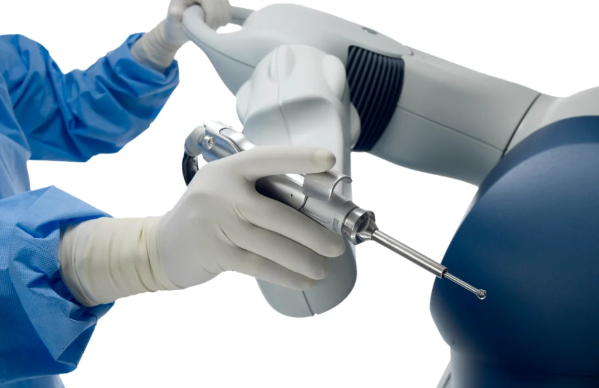

Robotic Knee Replacement in Hyderabad: A Complete Guide
Knee pain and stiffness can affect every part of your life. When conservative treatments like medications, physical therapy, and injections do not bring lasting relief, knee replacement surgery often becomes the next option.
In recent years, robotic-assisted knee replacement has emerged as a precise, patient-friendly approach that combines advanced technology with surgical expertise. This guide will walk you through everything you need to know about robotic knee replacement, from understanding the procedure to recovery, costs, and choosing the right surgeon.
What Is Robotic Knee Replacement?
Robotic knee replacement follows the same basic principle as traditional knee replacement: removing damaged cartilage and bone and fitting an artificial joint. The key difference lies in the use of a robotic arm or guidance system to assist the surgeon. This robotic assistance allows:
- The robot helps execute bone cuts and implant positioning to within a fraction of a millimeter.
- Detailed 3-D images of your knee obtained from specialized CT scans enable a personalized surgical plan.
- In complex cases, the robot can measure and adjust ligament tension to create more natural joint movement.
Despite the addition of robotic tools, your surgeon remains in full control throughout the procedure. The robot simply enhances the surgeon's skills, acting as a highly accurate assistant.
Why Choose Robotic Assistance?
Robotic systems offer several potential benefits over conventional methods:
- Proper alignment reduces joint wear and may extend the life of the implant.
- The system measures ligament balance in real time, helping avoid instability or stiffness.
- Precise cuts mean minimal removal of healthy bone and smaller skin incisions, leading to less pain and faster healing.
- Robotics can minimize variability between surgeons, aiming for reproducible outcomes.
These advantages can translate into a more natural-feeling knee, lower risk of complications, and a quicker return to activity.
Am I a Candidate for Robotic Knee Replacement?
If you qualify for a traditional knee replacement, you are likely a candidate for robotic-assisted surgery as well. Ideal candidates typically have:
- Advanced Arthritis: Severe osteoarthritis or rheumatoid arthritis that causes persistent pain and limited mobility.
- Prior Knee Surgeries: Patients with previous hardware (plates, screws) or complex knee anatomy.
- Deformities: Post-traumatic deformities or bow-leg/knock-knee alignment issues.
- General Health: Overall good health, since the procedure still requires general or spinal anesthesia and a brief hospital stay.
Patients with very poor bone quality or certain medical conditions may be better suited for alternative treatments. Your orthopedic surgeon will review your medical history, imaging studies, and lifestyle to determine if robotic assistance offers an advantage.
Preoperative Preparation
Robotic knee replacement preparation closely mirrors that of conventional surgery:
- Blood tests, ECG, chest X-ray, and any cardiac or pulmonary assessments recommended by your physician.
- A specialized CT scan or X-rays to create the 3-D model used by the robotic system.
- Your surgeon will advise which medications to continue or stop before surgery, including blood thinners.
- Prehabilitation exercises can strengthen muscles around the knee, improving recovery.
- Arrange for assistive devices (walker, crutches), set up a bedroom on the ground floor if needed, and clear pathways.
Hyderabad's centers often offer preoperative classes or counseling sessions to help you understand the robotic process and set realistic expectations for recovery.
How the Surgery Works
You will receive either general anesthesia or a spinal block so you remain pain-free. The surgeon positions your leg and marks key landmarks on your skin. Small tracking pins or markers are placed above and below your knee. These allow the robotic system to relate the real-time position of your leg to the preoperative 3-D model.
Using the preplanned cutting guides, the robotic arm assists the surgeon in making precise bone cuts. The system limits the cutter's movement to the exact volume of bone to be removed. Trial components are inserted, and your surgeon moves the knee through its range of motion. The robot measures alignment, ligament balance, and knee tracking. Adjustments can be made on the spot.
Once the position and balance meet the plan's goals, the actual implants are cemented or press-fit into place. The robotic arm or handheld tool guides this step for perfect orientation. The incision is closed with sutures or staples, and a sterile dressing is applied. The entire procedure typically lasts two to three hours.
Recovery After Robotic Knee Replacement
Robotic precision can lead to faster recovery, but you will still go through a structured rehabilitation plan:
Immediate Post-Op (Day 0–1)
You will be encouraged to stand and take a few steps with assistance, often on the same day of surgery. Pain management may include a combination of medications, nerve blocks, or local anesthetic infusions.
Early Rehab (Week 1–4)
Physical therapists will guide you through range-of-motion exercises, strengthening routines, and gait training. Swelling and discomfort should gradually decrease.
Mid-Stage Rehab (Month 1–3)
Progress to more challenging exercises, such as balance drills and light functional activities. You may switch from a walker or crutches to a cane, then eventually walk independently.
Late-Stage Rehab (Month 3+)
Return to higher-level activities, including low-impact sports like swimming or cycling. Some patients resume moderate hiking or golfing by months 4–6.
Cost of Robotic Knee Replacement in Hyderabad
The cost of robotic knee replacement in Hyderabad generally ranges from ₹1,50,000 to ₹3,00,000 per knee. Several factors influence the final price:
- Robotic System Used: Each platform (Mako, ROSA, NAVIO) may have different associated fees.
- Surgeon's Expertise: Highly experienced surgeons may charge more for their specialized skills.
- Implant Type: The brand and material of the knee prosthesis affect cost.
- Pre- and Post-Op Care: Hospital stay duration, rehab sessions, and consumables all factor into the total.
- Diagnostic Tests: The CT scans and blood tests required for robotic planning add to the expense.
Frequently Asked Questions (FAQs)
Is robotic knee replacement more painful?
No. Robotic precision often reduces tissue trauma, leading to less postoperative pain compared to traditional surgery.
Can I have both knees replaced at once?
Some patients opt for simultaneous bilateral replacement. Your surgeon will evaluate your overall health and recommend the safest approach.
How long will my new knee last?
With proper alignment and balance, modern implants combined with robotic accuracy can last 15–20 years or more.
When can I drive again?
Most patients can resume driving around 4–6 weeks after surgery, once they can safely control the vehicle without pain medications.
Are there risks unique to robotic surgery?
The risks are similar to traditional knee replacement (infection, blood clots, nerve injury). Robotic systems add a very small risk of technical malfunction, but centers have protocols to switch to manual methods if needed.
Conclusion
Robotic knee replacement in Hyderabad offers patients the best of both worlds: the proven benefits of joint replacement and the accuracy of advanced robotic technology. From personalized 3-D planning to real-time surgical guidance and optimized recovery, this approach aims to deliver superior outcomes and a smoother rehabilitation journey.
If you or a loved one suffers from severe knee pain that limits daily activities and fails to respond to conservative treatments, consider consulting an orthopedic surgeon experienced in robotic techniques. Discuss whether you qualify, understand the costs and insurance coverage, and learn about the center's expertise. With the right preparation and a skilled team, you can take confident steps toward regaining mobility and enjoying a more active, pain-free life.